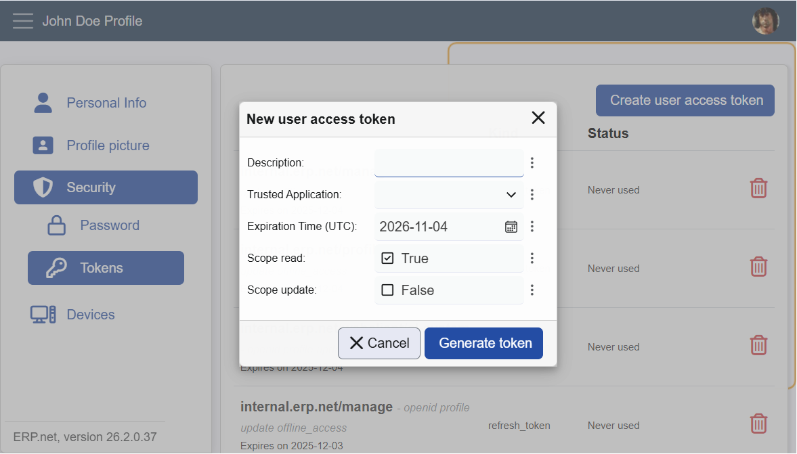
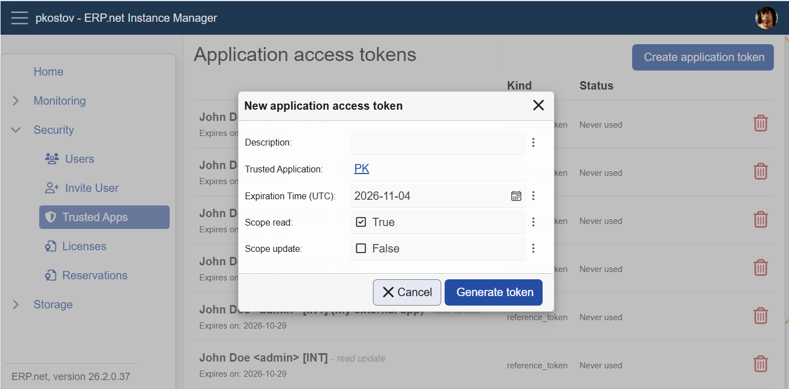

Issuing Reference Tokens (PAT and SAT)
Reference tokens are long-lived, opaque API keys that start with enrt_.
They are issued manually and must be handled like passwords. ERP.net never stores them in plain text; you will only see the token value once, at creation time.
Warning
Issuing PATs or SATs is allowed only if the target Trusted Application has its AccessTokens policy set appropriately:
None - reference tokens cannot be issued
AuthenticatedUsers - any signed-in user may issue PATs for this app
AdministratorsOnly - only admins may issue PATs or SATs for this app
Personal Access Tokens (PAT)
A PAT represents an individual user. Calls made with a PAT run with that user's identity and permissions.
Where to issue a PAT
Profile Site -> Security -> Tokens

On this page the user can:
- See all of their existing PATs for all Trusted Applications
- Review description, scopes, kind, expiration, and last-used time
- Revoke any listed PAT immediately
Create a PAT
- Click Create user access token.
- In the dialog, provide:
- Description (optional but recommended)
- Trusted Application
- The list shows only apps where AccessTokens = AuthenticatedUsers
- If the signed-in user is an admin, apps with AdministratorsOnly are also listed
- Expiration Time (UTC)
- Scopes (for example, read, update)
- Click Generate token.
- Copy the shown token value (starts with
enrt_...) and store it securely. ERP.net cannot show it again.

PAT Notes
- PATs are on behalf of the current user.
- Treat PATs as passwords. Never share, email, or commit them to source control.
- Revoke PATs immediately if leaked or no longer needed.
Service Access Tokens (SAT)
A SAT represents the application identity defined by a Trusted Application. Calls run using the System User configured on that Trusted Application.
Where to issue a SAT
Instance Manager Site -> Security -> Trusted Apps -> open a specific app

Only administrators can access the Instance Manager. The AccessTokens policy of the app still applies:
- If AccessTokens =
None, the Create application token button is disabled. - If AccessTokens =
AuthenticatedUsers, any signed-in user can issue PATs for that app (via Profile Site), but SATs still require admin access to Instance Manager. - If AccessTokens =
AdministratorsOnly, only admins can issue PATs or SATs.
On this page an admin can:
- See all tokens for the selected Trusted Application (both PATs issued by users and SATs issued by admins)
- Revoke any listed token immediately
Create a SAT
- Click Create application token.
- In the dialog, provide:
- Description (optional, but recommended)
- Expiration Time (UTC)
- Scopes (for example,
read,update) - The Trusted Application is fixed by the page you opened.
- Click Generate token.
- Copy and store the token securely. It will not be shown again.

SAT Notes
- SATs always use the Trusted Application's System User.
- Perfect for unattended integrations, schedulers, and middleware.
- Admins can review and revoke any token for the app from this page.
Troubleshooting
I cannot select my app in the PAT dialog
Make sure the Trusted Application's AccessTokens policy is not set to None.
If it is set to AdministratorsOnly, you'll need an administrator to issue the token,
or use another app configured with AuthenticatedUsers.
The "Create application token" button is disabled
The selected Trusted Application likely has AccessTokens = None.
Ask an administrator to enable token creation or issue a PAT instead, if appropriate.
My SAT calls run as the wrong identity
Service Access Tokens (SATs) always act as the Trusted Application's System User,
not the person who created the token.
Verify the System User configuration for that Trusted Application.
I lost my token value
Once a token is generated, ERP.net does not store or display it again.
If you lose it, generate a new token and revoke the old one to stay secure.
Learn More
Reference Access Tokens (PAT, SAT)
Full documentation on how reference tokens work - their behavior, usage, security model, and integration with sessions.Trusted Applications and Access Control
Learn about AccessTokens policy, System User, and scopes.Scopes and Permissions
How to choose the right scopes for your token.Token Lifetime and Renewal
Understand how expirations work for access and reference tokens.